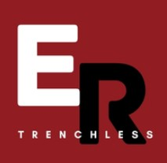

Atraviesos e Hincados
Método de instalación subterránea que permite empujar tuberías a través del suelo sin necesidad de excavar zanjas extensas.
Saber más →
Implementamos soluciones innovadoras para servicios públicos y privados de forma amigable con la comunidad y el medio ambiente.
Comunícate con nosotrosEn ER Trenchless Chile, somos especialistas en la implementación de tecnologías sin zanja para el desarrollo y mantenimiento de infraestructura subterránea. Nuestro enfoque principal es brindar soluciones altamente eficientes que minimizan drásticamente la excavación y la afectación a las vías públicas, reduciendo los costos operativos y el impacto ambiental. Contamos con equipos de última generación garantizando la continuidad operativa de los servicios con los más altos estándares de calidad y seguridad.
Método de instalación subterránea que permite empujar tuberías a través del suelo sin necesidad de excavar zanjas extensas.
Saber más →Ejecución de cruces bajo calles o infraestructura existente con alta precisión y mínima intervención del entorno.
Saber más →Técnica moderna para renovar redes dañadas, fracturando la tubería existente e instalando una nueva simultáneamente.
Saber más →Servicio de diagnóstico mediante cámaras de alta resolución para inspeccionar el interior de tuberías sin excavación.
Saber más →Suministro de piezas especiales para redes sanitarias, industriales y de agua potable, adaptadas a cada requerimiento de obra.
Saber más →Herramientas flexibles diseñadas para el destape y limpieza de tuberías, permitiendo remover obstrucciones mediante accesorios especializados.
Saber más →Dispositivos fundamentales para controlar el flujo de fluidos de forma segura y eficiente, incluyendo opciones manuales y automatizadas.
Saber más →